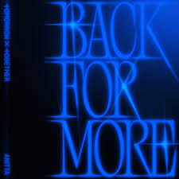
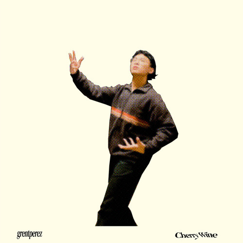
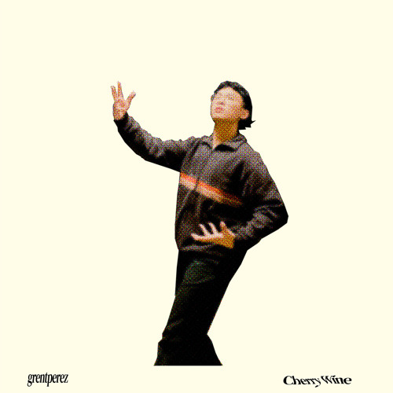

I asked a couple of my friends their favorite songs and albums. Here are some of their top choices with why they like them and or who they'd recommend these to.

Good at Love by Twice
I love all the components of the song very much. Just from the beginning, it has me hooked and it offers a nice flow as it progresses. My favorite parts of the song would be the opening, chorus, and bridge.
Back For More by Tomorrow by Together
This song was released pretty recently but it's already got me coming back for more :) Back for More has a very upbeat tempo so it is a great energizer for the days I'm tired.

Double Take by Dhruv
I tend to like chill songs but still with a lively tempo. I like that this song combines those two elements well with its lively beats and somewhat calm flow and vocals.

Can I Have the Day With you by Sam Ock ft. Michelle
Songs nowadays are usually very fast and loud so I like songs with a calm flow like this one. The combination of the two artists' voices is wonderful and fits the type of energy I am looking for. On top of that, the instruments complement the voices well.

Logical by Olivia Rodrigo
I'd recommend this song for people who are sad.

Zone by Jihyo
Favorite song: Wishing on you by Jihyo
Zone has a great combination of genres so you can get a new experience with each song. I love that you can go through many experiences with the album. My favorite song is Wishing on You because of its balance between being upbeat and slow. The part I like most is, "And if this was an equation, you plus me means everything."

The Chaos Chapter: Freeze by Tomorrow by Together
Favorite song:0X1=LOVESONG (I Know I Love You)
Every song in the album had a different meaning and each one resonated with me and my personal experiences. They all had great and memorable tunes which when combined gave an amazing vibe to the album. On top of that, the visuals and concept of the album were very beautiful.

5 Star by Stray Kids
Favorite song:Item
Stray Kids is one of my favorite artists and I tend to like most of their releases. Their new album 5 Star has been on repeat for me because of the many songs it has. I like the overall upbeat energy of the album. My favorite song Item showcases that lively energy well. Which makes it a great song to run to at times.

Layover by V
Favorite song:Rainy Days
Layover for me is very comforting with its mostly slow tunes. Like I said before I prefer songs that are pretty slow and calm this album is filled with songs that are just like that. I love Rainy Days because of its comforting vibe, and it truly would be a lovely song for a rainy day.
Guts by Olivia Rodrigo
Favorite song:Logical
I like the album as it contains many emotional songs but despite that, it still has various moods that are fun to vibe with.
 
 


Here are more of our favorite songs and albums that we enjoy here and there. Some of them are even involved in some happy memories of ours as a group. All in all, we each enjoy our own music but it is better to enjoy some of them together as some have led to the start and growth of some of our friendships.